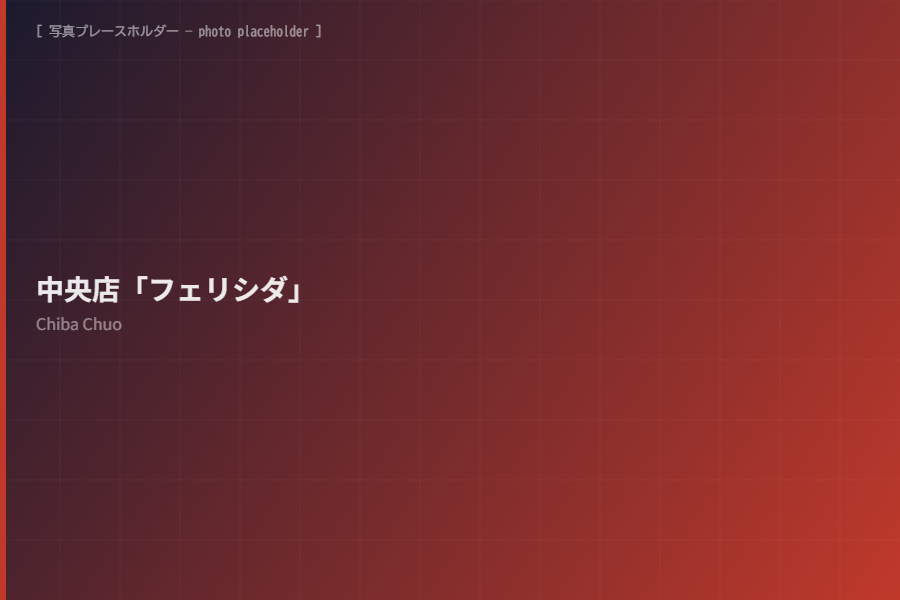
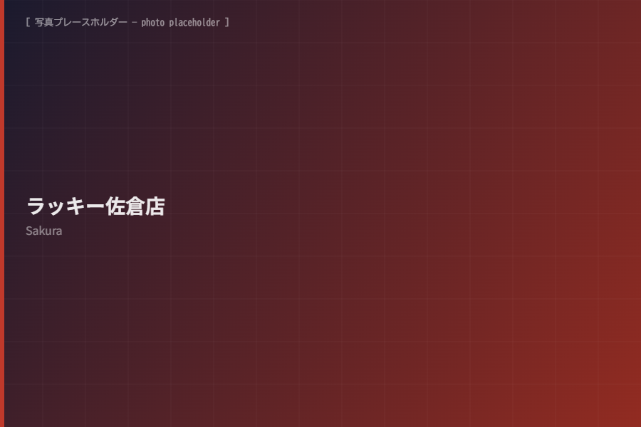
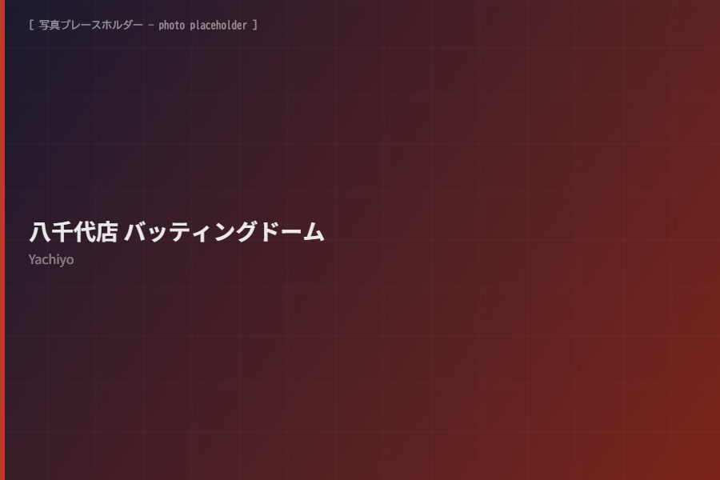

Chiba Chuo
中央店「フェリシダ」
JR千葉駅から徒歩5分。赤い外壁と屋上の大きな飛行機が目印のゲームセンターです。最新ゲームと流行りの景品を取り揃えています。
- 住所
- 千葉県千葉市中央区富士見2-8-1
- 営業時間
- 9:00〜24:00 / 年中無休
- 駐車場
- なし。近隣コインパーキングをご利用ください。
- 備考
- 敷地内全面禁煙
Stores
千葉県内の直営アミューズメント施設をご案内します。営業時間や設備は変更となる場合があるため、ご来店前に各店舗へご確認ください。

Chiba Chuo
JR千葉駅から徒歩5分。赤い外壁と屋上の大きな飛行機が目印のゲームセンターです。最新ゲームと流行りの景品を取り揃えています。

Sakura
京成勝田台駅と志津駅の中間にある、大きな赤い「GAME LUCKY」の看板が目印の店舗です。大型メダル筐体、音楽ゲーム、カードゲームなどを楽しめます。

Yachiyo
東葉高速鉄道 八千代緑が丘駅から徒歩10分。バッティングマシン、音楽ゲーム、カードゲーム、UFOキャッチャー、ビデオゲームなどを楽しめる施設です。
Before Visit
イベント、メンテナンス、機種入れ替えにより内容が変わる場合があります。お急ぎの際は各店舗へお電話ください。